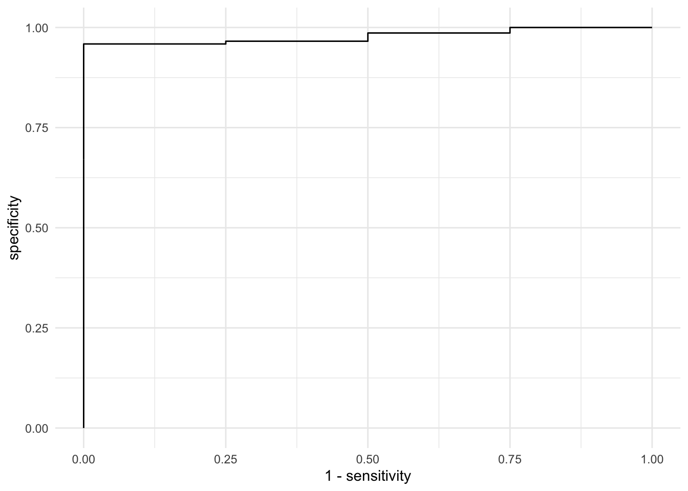

![]()
n <- 500
pot_temp <- rnorm(n, 78, 10)
mash_wt <- rnorm(n, 50, 2)
ambient_temp <- rnorm(n, 30, 7)
ambient_humidity <- rnorm(n, 82, 12)
methanol_content <- ifelse(pot_temp <65, .5 * mash_wt - ambient_humidity*(ambient_humidity)/1000,
.2* mash_wt - ambient_humidity*(ambient_humidity)/1000)
moonshine_data <- tibble(pot_temp,
mash_wt,
ambient_temp,
ambient_humidity,
methanol_content)One of the challenges in any kind of prediction problem is understand the impact of a) not identifying the target and b) the impact of falsely indentifying the target. To put it into context, if you are trying to use an algorithm to indentify those with ebola, whats the risk of missing someone (they could infect others with the disease) vs identifying someone who does not have the disease as having the disease (they get quarantined and have their life disrupted). Which is worse? That isn’t a statistical question, it is a context, and even an ethical question (ok, yes, you could also apply a loss function here and use that to find a global minimum value should it exist, but then again that is a choice).
Typically we use two terms to talk about this problem, sensitivity (of all “targets” how many did the model correctly identify) and specificity (of those who were not targets, what proportion were correctly identified as not a target).
Data Generating Process
As always, I want to build some simulated data to understand this problem. Let’s assume that we are trying to identify methanol levels in moonshine. Moonshine is typically homemade, illicit, high alcohol spirits. The alcohol level is increase through distillation. Ethanol, the desired alcohol boils at something like 78 deg C while methanol boils at 65 deg C. Methanol has some toxic side effects so you really don’t want any in your cocktail. So let’s make some fake data with some measurements.
Let’s also assume that methanol content greater than 17 is toxic (these numbers are completely made up).
So Let’s see what we have in our data:
| Toxicity | Count | Percent |
|---|---|---|
| 0 | 473 | 95% |
| 1 | 27 | 5% |
Yikes! We have a raw case problem. Given our data, what we are targetting doesn’t happen very often. So let’s see what happens when we try to model this:
dat_training <- sample_frac(moonshine_data, .7)
dat_testing <- setdiff(moonshine_data, dat_training)We could build a very simple binomial regression, but it could guess that every sample will pass and be correct >90% of the time!
| Toxicity | Count | Percent |
|---|---|---|
| 0 | 327 | 93% |
| 1 | 23 | 7% |
Loading required package: Matrix
Attaching package: 'Matrix'The following objects are masked from 'package:tidyr':
expand, pack, unpackLoaded glmnet 4.1-4Warning in rep(seq(nfolds), length = N): partial argument match of 'length' to
'length.out'Warning in seq.default(along = s): partial argument match of 'along' to
'along.with'
Warning in seq.default(along = s): partial argument match of 'along' to
'along.with'
Warning in seq.default(along = s): partial argument match of 'along' to
'along.with'
Warning in seq.default(along = s): partial argument match of 'along' to
'along.with'
Warning in seq.default(along = s): partial argument match of 'along' to
'along.with'
Warning in seq.default(along = s): partial argument match of 'along' to
'along.with'
Warning in seq.default(along = s): partial argument match of 'along' to
'along.with'
Warning in seq.default(along = s): partial argument match of 'along' to
'along.with'
Warning in seq.default(along = s): partial argument match of 'along' to
'along.with'
Warning in seq.default(along = s): partial argument match of 'along' to
'along.with'Warning in seq.default(0, length = nlambda): partial argument match of 'length'
to 'length.out'[1] 0.003981635Let’s see what our model extracted:
Warning in seq.default(along = s): partial argument match of 'along' to
'along.with'5 x 1 sparse Matrix of class "dgCMatrix"
s1
(Intercept) 32.77726480
ambient_humidity -0.07776735
ambient_temp .
mash_wt .
pot_temp -0.43056419For binary classification, the first factor level is assumed to be the event.
Use the argument `event_level = "second"` to alter this as needed.
Attaching package: 'yardstick'The following object is masked from 'package:readr':
specWarning in (function (x = character(), levels, labels = levels, exclude = NA, :
partial argument match of 'label' to 'labels'Warning in (function (x = character(), levels, labels = levels, exclude = NA, :
partial argument match of 'label' to 'labels'
Positive Negative
Positive 1 0
Negative 3 146| .metric | .estimator | .estimate |
|---|---|---|
| accuracy | binary | 0.98 |
| kap | binary | 0.39 |
| sens | binary | 0.25 |
| spec | binary | 1.00 |
So the estimates looks good for sensitivity meaning that the model only correctly identified a little over half of the toxic batches. Is this good enough? Well for a consumer with no knowledge about the potential risk, I don’t think so. The next steps then would be to tune the model to improve the sensitivity in order to reach an acceptable level. This could be as easy as accepting a higher false positive rating. We can look at this with the ROC curve.

Still not great. So then what do we do? Accept a higher false positive rate? Or now to we build a better model with different data? What if we could inform the brewer about the process parameters that matter. Then we could fix the problem at the source. Perhaps that’s the best bet….
Reuse
Citation
BibTeX citation:
@online{dewitt2019,
author = {Michael DeWitt},
title = {Finding the {Needle} in the {Haystack}},
date = {2019-06-09},
url = {https://michaeldewittjr.com/programming/2019-06-09-finding-the-needle-in-the-haystack},
langid = {en}
}
For attribution, please cite this work as:
Michael DeWitt. 2019. “Finding the Needle in the Haystack.”
June 9, 2019. https://michaeldewittjr.com/programming/2019-06-09-finding-the-needle-in-the-haystack.